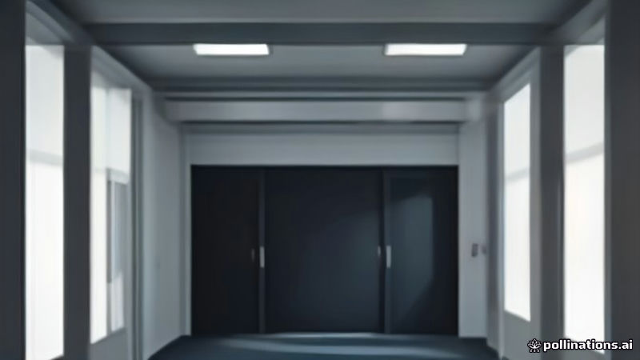

কমিশন প্রকাশ করেছে রাষ্ট্রপতি নিরাপত্তায় পুলিশ, গার্ড ও গোয়েন্দা সংস্থার ত্রুটি
Prothom Alo · 2026-11-15
AI-generated illustrationএকটি কমিশন রিপোর্টে পুলিশ, প্রেসিডেনশিয়াল গার্ড রেজিমেন্ট ও গোয়েন্দা সংস্থার নিরাপত্তা ব্যর্থতা প্রকাশ পেয়েছে।
রাষ্ট্রপতির নিরাপত্তা তদারকি করার দায়িত্বে থাকা কমিশন বিভিন্ন সংস্থার দুর্বলতা চিহ্নিত করেছে। প্রথম আলো অনুসারে, তদন্তে পুলিশ, প্রেসিডেনশিয়াল গার্ড রেজিমেন্ট (পিজিআর) এবং সংশ্লিষ্ট গোয়েন্দা সংস্থাগুলোকে নিরাপত্তা দায়িত্ব পালনেও নানা মাত্রার ব্যর্থতা দেখানো হয়েছে।
রিপোর্টে উল্লেখ করা হয়েছে যে প্রধান ফটক খোলা ছিল এবং কক্ষের সামনে প্রহরী ছিল না, যা নিরাপত্তা প্রোটোকল অনুসরণে ঘাটতি নির্দেশ করে। ফলস্বরূপ, দ্রুত সংশোধনী পদক্ষেপের আহ্বান জানানো হয়েছে যাতে রাষ্ট্রপতির সুরক্ষা ব্যবস্থাকে শক্তিশালী করা যায়।
Read the original reporting at the links above.
English version
Commission Finds Police, Guard and Intelligence Lapses in Presidential Security
The commission tasked with overseeing the president’s security has identified shortcomings across several agencies. According to Prothom Alo, the investigation highlighted that police, the Presidential Guard Regiment (PGR) and related intelligence services each displayed varying degrees of failure in fulfilling their protective duties.
The report notes specific lapses such as an unsecured main window and the absence of a guard outside the president’s room, underscoring gaps in standard security protocols. The findings call for immediate corrective measures to strengthen the protective framework around the head of state.